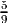
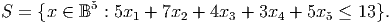

The flow variables satisfy the fixed charge constraints 0 ≤ x1 ≤ 3y1 and 0 ≤ x2 ≤ 9y2 where yj is a binary variable. The set of feasible solutions at D is given by
A fixed charge inequality is
|
| (1) |
where C- ⊆ N- = {1} and L- ⊆ N-\ C- are disjoint subsets and a 1 = 3 denotes the capacity of the incoming arc. The parameter λ = 9 -∑ j∈C-aj - 2.
Note: We have three choices for C- and L-: (i) C- = {1},L- = ∅,N-\ (C-∪ L-) = ∅, (ii) C- = ∅,L- = {1},N-\ (C-∪ L-) = ∅, (iii) C- = ∅,L- = ∅,N-\ (C-∪ L-) = {1}.
- (10 points) Show equation (1) is satisfied by all points in T when y2 = 1, regardless of the choice of C- and L-.
- (15 points) Show equation (1) is satisfied by all points in T when y2 = 0, regardless of the choice of C- and L-.
- (5 points) The point x = (3, 5), y = (1,) is in the LP relaxation of the feasible region. Show equation (1) is violated by this point, for two different choices of C- and L-.
- (10 points) Show the valid inequality x2 + x4 + x5 ≤ 2 has Chvatal-Gomory rank
equal to one.
 - (10 points) Show that x2 + x4 + x5 ≤ 2 defines a facet of conv(S).
- (10 points) Strengthen the valid inequality x1 + x2 + x5 ≤ 2 by lifting it.
- (5 points) Show from first principles that the maximum number of edges in any cut is 6.
- (10 points) It follows from part 3a that the constraint ∑ e∈Exe ≤ 6 is valid for the MaxCut problem on K5. How would you try to show that this constraint gives a facet of the convex hull of cuts? (Note: I do not want you to show that it is a facet; instead, I want you to tell me what points you might consider, and what you might try to do with those points.)
- If G = (V,E) is a perfect graph then its complement graph is also perfect.
- Let G = (V,E) be a graph. If the maximum cardinality node packing on G has the same size as the minimum cardinality clique cover on G then G is a perfect graph.
- The node-arc incidence matrix of an undirected graph is totally unimodular.
- Assume x ∈ ℝ+n satisfies the inequalities gT x ≥ 1 and hT x ≥ 1. Then x also satisfies ∑ j=1n max{g j,hj}xj ≥ 1.
- Assume the nonnegative integer vector x satisfies x1 + 0.7x2 + 0.2x3 = 5.4. Then x also satisfies 0.2x2 + 0.2x3 ≥ 0.4.